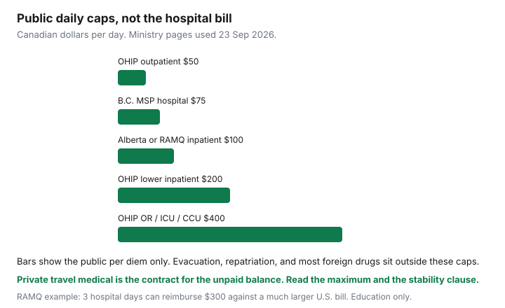

Insurance · Canada
Why Provincial Health Plans Barely Cover You Abroad—and How to Buy Travel Medical Right
A provincial health card is not a travel policy. Middle-aged Canadians still learn that in a U.S. emergency department, when the invoice is in a different currency and the public plan pays a daily amount that would not cover the parking at many American hospitals. This page puts the public caps in plain numbers, then a buying and claiming method for private travel medical. It is education. It is not a policy and not a card ranking.
Ontario is the worked example because the Ministry of Health publishes daily caps in dollars. Alberta, British Columbia, and Québec publish different caps. Other provinces are different again — use your ministry’s page, not this table, as the binder. Private travel medical is what stands between those caps and the bill.
Disclosure: Travel medical policies are an offer type. Saving Optimizer may earn a commission if we later add partner links. We do not currently claim travel-insurer partnerships. We do not sell policies. Education only. Public-plan figures below were read from provincial pages on 23 Sep 2026 and can change.
Key takeaways
- OHIP’s travellers program (page updated 16 Jan 2026) pays up to $50 a day for emergency outpatient hospital care, $200 a day for lower-level inpatient care, and $400 a day for operating room, coronary care, ICU, or neonatal or pediatric special care.
- Alberta’s AHCIP hospital rates outside Canada are $100 a day inpatient (not including discharge day) and $50 a day outpatient. B.C. MSP limits emergency hospital care to $75 a day. RAMQ’s own holiday example uses $100 a day hospitalization and $50 a day outpatient.
- Evacuation, repatriation, and most drugs bought abroad are not what these plans pay. OHIP says a transfer home is on you unless a private policy covers transport.
- Shop the certificate: maximum, deductible, stability window, and trip length. Age bands move the price. A credit-card benefit is a certificate, not a slogan — and this page does not rank cards.
- Call the assistance line before non-emergency treatment when the wording requires it. Keep proof you were still eligible for the provincial plan.
Provincial out-of-country limits in plain numbers (e.g. OHIP daily caps)—re-verify at draft
These are reimbursement ceilings for eligible emergency care, paid in Canadian dollars, and only when you still qualify for the provincial plan. They are not pre-approval of a U.S. hospital’s chargemaster. Physician fees, where covered, are generally capped at what the same service would pay at home — the lesser of the bill or the provincial schedule — which is a second small cheque, not the facility bill.
| Plan | Emergency hospital amount | Source note |
|---|---|---|
| OHIP (Ontario) | Outpatient: the lesser of $50 a day or the hospital bill. Inpatient: up to $400 a day in an operating room, coronary care, ICU, or neonatal or pediatric special care; up to $200 a day for lower levels of care. | ontario.ca, OHIP coverage while outside Canada. Page updated 16 Jan 2026. Care must be medically necessary, in a licensed facility, for an acute unexpected condition that arose outside Canada. |
| AHCIP (Alberta) | Inpatient hospital: $100 a day, not including the day of discharge. Outpatient: $50 a day, one visit a day. | alberta.ca, health care coverage outside Canada. You pay the provider, then claim. Travel medical is strongly recommended on that page. |
| MSP (British Columbia) | Emergency hospital care: maximum $75 a day. Physician services will not exceed B.C. rates. | Province of B.C., medical benefits outside B.C. The same page notes U.S. inpatient costs often far exceed $75. |
| RAMQ (Québec) | RAMQ’s published emergency example: up to $100 a day of hospitalization and $50 a day for an outpatient hospital stay. A three-day example on that page is a $300 public reimbursement. | ramq.gouv.qc.ca, healthcare received outside Canada. Students and workers on special coverage can have different hospital rules. A vacation from that posting uses the regular limited rates. Professional services are reimbursed on Québec rates, not “full bill.” |
Arithmetic, not a scare quote: five OHIP ICU days at the $400 cap is $2,000 of hospital per diem before physician-schedule amounts. RAMQ’s own page says a three-day Florida stay after a heart attack could reach US$200,000 excluding doctors’ fees, against a $300 public hospital reimbursement in that example. Treat the U.S. figure as RAMQ’s illustration, not a quote for your trip.

Ontario residents away more than seven months in any 12-month period can keep OHIP for up to two years only if they still make Ontario home, hold a valid card, and were in Ontario at least 153 days in each of the two 12-month periods before departure — and they take proof to ServiceOntario before they leave. Snowbird calendars that ignore that rule can void both OHIP and a private policy that requires you to be eligible for it.
What GHIP never covers: evacuation, repatriation, most outpatient drugs
“GHIP” here means the provincial or territorial health plan (OHIP, MSP, AHCIP, RAMQ, and the others). The gaps that produce five-figure invoices are consistent even when the daily cap differs.
- Medical evacuation and repatriation. OHIP states it does not cover transfer to an Ontario hospital. If you have no travel policy with transport, you coordinate and pay. RAMQ lists emergency transportation by ground or air, and the cost of bringing a person back to Québec, as not covered.
- Most drugs bought outside the province. RAMQ says drugs purchased outside Québec are not covered, even when a physician prescribed them. Do not assume a provincial drug plan follows you to a U.S. pharmacy. Bring an adequate supply when your pharmacist says that is allowed, and still insure the trip.
- Ambulance. RAMQ states ambulance transport is not an insured service in the out-of-country explanation. Alberta lists transportation among costs the AHCIP does not cover.
- Care that is not an eligible emergency. Elective treatment, a condition that was not acute and unexpected, and care outside a licensed facility generally fall outside these travellers’ programs. Ontario’s prior-approval path for planned care is a different program and still leaves travel and meals to you unless they are part of an insured hospital service.
- The unpaid balance. Every plan above pays you, or the facility, only up to its rule. You owe the rest unless a private policy pays it.
A credit-card travel benefit can be real coverage. It can also cap trip length, cut off at an age, and use a stability definition you have never read. This guide does not rank cards. Read that certificate the same way you would read a standalone policy, and do not assume the card replaces one.
Policy checklist: maximum, deductible, pre-existing stability, trip length
Buy from the certificate, not the banner. Four fields decide whether a claim is paid.
| Field | What to write down | Why it bites |
|---|---|---|
| Maximum | The dollar cap for medical, and any lower sub-limit. | U.S. facility bills can exceed a low cap. Households often compare certificates in the millions for U.S. trips. The number on your certificate is the only one that counts. |
| Deductible | Per trip, per person, or per condition — and the currency. | A higher deductible lowers premium and raises the cheque you write in the emergency. Only choose it if that cash is already liquid. |
| Stability | How many days a condition must be “stable,” and the definition of stable. | Canadian wordings commonly use 90, 180, or 365 days. A change in medication or dose can restart the clock. That definition is contractual, not a provincial statute. If you cannot meet it, look for a policy that will cover the condition or do not travel on the assumption you are covered. |
| Trip length | Single-trip days, and the longest trip an annual plan allows. | A 15-day annual plan does not cover day 40. Snowbird trips need a top-up or a different contract. Match the days to the tickets. |
Also read exclusions for alcohol, risky activities, pregnancy, and travel against medical advice. Employer or group travel medical ends when the booklet says it ends — often with the job, and often with a shorter maximum. Write that amount on the same sheet as the annual insurance review.
Family vs individual policies and age band pricing cliffs
A “family” plan is a pricing bundle, not a promise that every relative is a good risk. Read who is a named insured, the maximum age, and whether the eldest traveller sets the price for everyone.
- Couple in their fifties, parent in their seventies. The parent often needs their own certificate. Forcing one family contract can either decline the parent or price the couple as if they were the parent.
- Children. Some plans include dependants under a stated age at little or no extra premium. The age is on the form. A 22-year-old on a semester abroad may be outside it.
- Age bands. Premiums commonly step up at round birthdays — ask for the price at your current age and at the next band the insurer uses (often around 60, 65, 70, 75, and beyond). If a birthday falls during the trip, ask which band applies on the departure date and which applies if you extend.
- Annual multi-trip versus single trip. Multi-trip wins when you take several short trips and each one fits the day cap. A single long trip is often cheaper on a single-trip plan than on an annual plan you then have to top up.
Get two written quotes on the same maximum, deductible, and days: one individual (or couple) plan and, if you are shopping for more than two people, one family structure. Travel-medical quote flows are an offer type. We are not recommending a brand.
Claim steps abroad: call assist line before expensive treatment when possible
Wordings differ on the hour limit. Many require you to call the assistance number before treatment that is not a true emergency, or within a stated window after an emergency admission. Missing that call is a common denial. The hours are on your certificate — do not borrow another traveller’s 24-hour rule.
- If it is an emergency, get care. Call assistance as soon as someone can, with the policy number, provincial health number, hospital name, and dates.
- If it is not an emergency (a follow-up, a scan, a transfer), call before you incur the cost. Assistance may direct the facility or guarantee payment.
- Ask the hospital for itemized invoices, a discharge summary, and proof of payment. Keep boarding passes and the dates you were outside Canada.
- Do not sign away reimbursement rights at the desk because a clerk is rushing you. Ask assistance what they need.
- At home, file the provincial claim and the private claim. In Ontario, the Out of Province/Country Claims Submission form goes to the Ministry of Health Claims Services Branch; the page says to keep the OHIP cheque stub because a supplemental insurer may want it. Private policies often coordinate with the public plan and will ask for that explanation of benefits.
If the insurer is an Assuris member, health-expense protection (the greater of $250,000 or 90% of the benefit, on Assuris’s page used 23 Sep 2026) is a backstop if that insurer fails. It is not a reason to buy a thin maximum. Some travel policies are not issued by Assuris members. Check.
Keep proof of provincial eligibility so private policy coordination stays clean
Private travel medical sold to Canadians often requires that you are covered by your provincial plan for the whole trip. If you have been outside the province too long, or your card is expired, or your address on file is wrong, both layers can fail.
- Valid health card, current address on file, and a photo of both sides in your phone and in an email you can open abroad.
- Ontario long absences: ServiceOntario visit before departure if you will be outside Canada more than seven months in a 12-month period, with the 153-day history the ministry describes.
- Québec: tell RAMQ about a departure when their page says you must. Special coverage for study or work is not the same as vacation coverage.
- B.C.: MSP eligibility during a temporary absence has its own month limits. A private policy does not repair a lapsed MSP account.
- After the trip: submit the public claim even when the private insurer paid the hospital. Coordination paperwork is why OHIP tells you to keep the stub.
Put the trip on the same annual calendar as the house and the car. Buying medical the night before departure is how stability clauses and card age caps get discovered too late.
Sources & date stamps
- Ontario Ministry of Health, OHIP coverage while outside Canada — $50 / $200 / $400 hospital caps, no transfer home, 153-day and seven-month rules. Page updated 16 Jan 2026; used 23 Sep 2026.
- Alberta.ca, AHCIP coverage outside Canada — $100 / $50 hospital rates (used 23 Sep 2026).
- Province of British Columbia, medical benefits outside B.C. — $75 a day emergency hospital maximum (used 23 Sep 2026).
- RAMQ, healthcare received outside Canada, and services covered outside Québec — $100 / $50 example, ambulance and repatriation excluded, drugs outside Québec excluded (used 23 Sep 2026).
- Assuris, how am I protected — health expense greater of $250,000 or 90% at member insurers (used 23 Sep 2026).
Frequently asked questions
How much does OHIP pay for emergency care outside Canada?
On the Ontario page updated 16 January 2026, emergency outpatient hospital care is the lesser of $50 a day or the bill. Inpatient care is up to $200 a day, or up to $400 a day in an operating room, coronary care, ICU, or neonatal or pediatric special care. Physician fees are capped at Ontario rates. OHIP does not pay to fly you home.
Do other provinces pay more?
Not in a way that covers a U.S. hospital bill. Alberta publishes $100 a day inpatient and $50 a day outpatient. B.C. MSP limits emergency hospital care to $75 a day. RAMQ's published emergency example is $100 a day in hospital and $50 a day outpatient. Re-check your ministry before you travel.
What should a travel medical policy include?
A maximum large enough for a foreign facility bill, a deductible you can pay, a stability definition you actually meet, and a trip length that matches the tickets. Age bands change the price. Call the assistance line when the wording requires it.
Does a credit card replace travel medical?
Sometimes the card includes a certificate with its own age, trip-length, and stability limits. Read that certificate. This guide does not rank cards, and a slogan on the card is not a policy.
Is this insurance advice?
No. Education only. Travel medical policies are an offer type. We do not claim a partnership with any insurer.